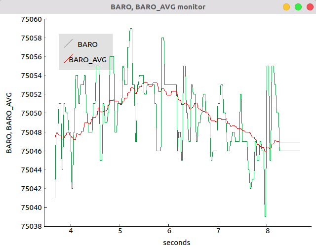

Plotting data¶
There is an utility which plots any topic or set of topics, in real-time.
It is quite similar to (and inspired by) both rqt_plot in ROS
and the Arduino IDE serial plotter
(by the way, did you know it?). It is contained in the file plotdata.py. To use it:
- Ensure that you have the
pyqtgraphPython module installed. - Open the
plotdata.pyfile. You should change the top lines. The variable TIME_SPAN sets the length of the plot (it rolls to the left, and TIME_SPAN sets how much time a specific data point will stay on the graph before disappearing). TOPICS is a list of topics that you want to graph. All topics should only contain a single number to be graphed (say, the temperature or the atmospheric pressure). - Save the
plotdata.pyfile. - Run the master node and any other nodes, as usual.
- When you wish to start plotting data, execute
plotdata.py(python plotdata.pyor similar) - The script should show a window plotting the data in the specified topics.
See below for an image. Green is real-time barometer data. Red is the same data, processed by a 15-point rolling average.
